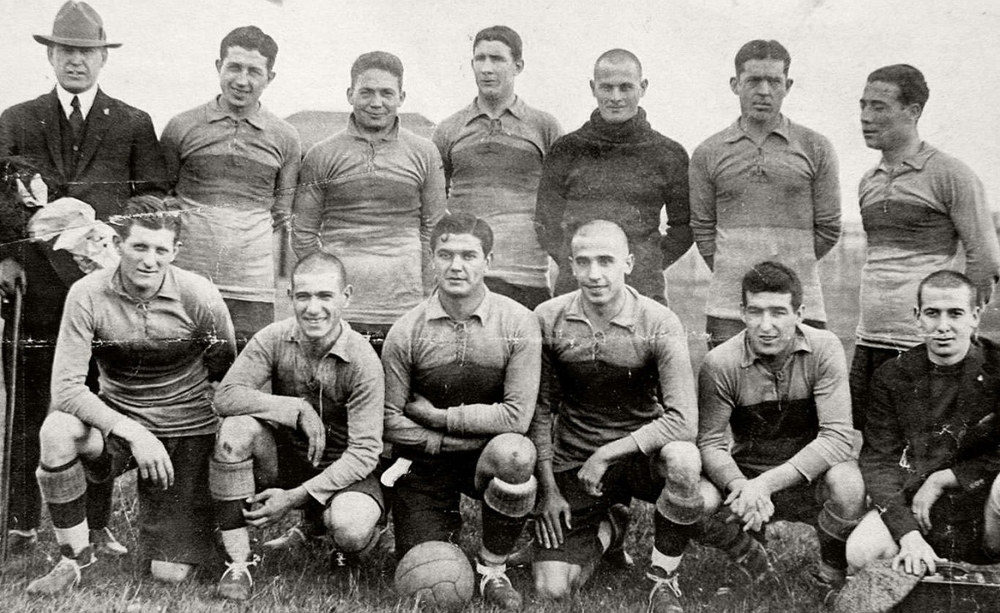
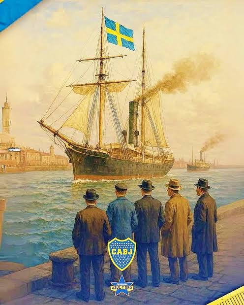
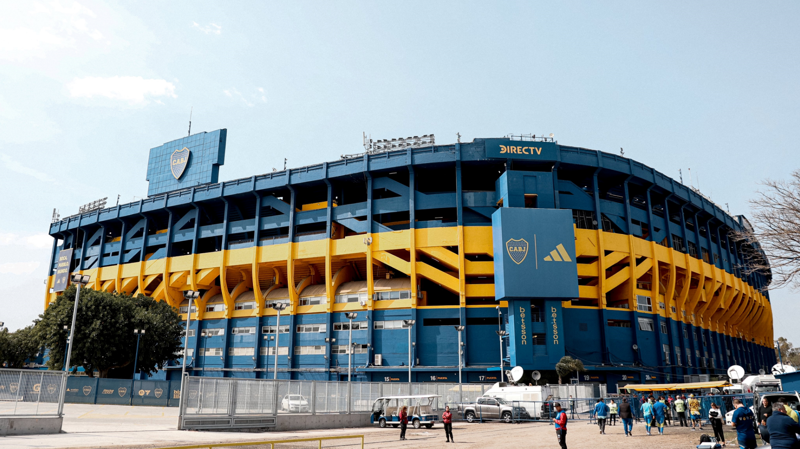
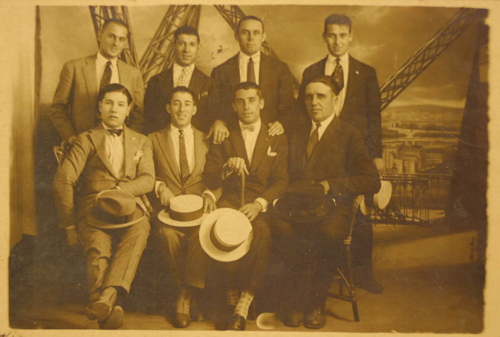
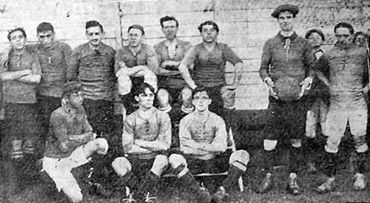
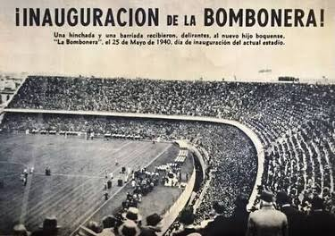
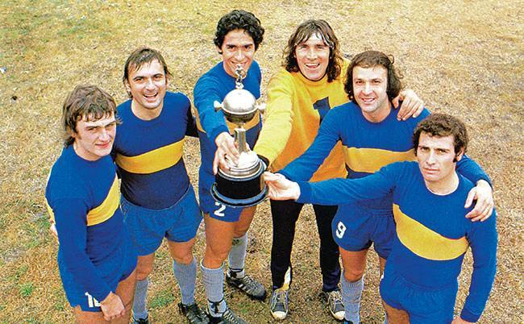
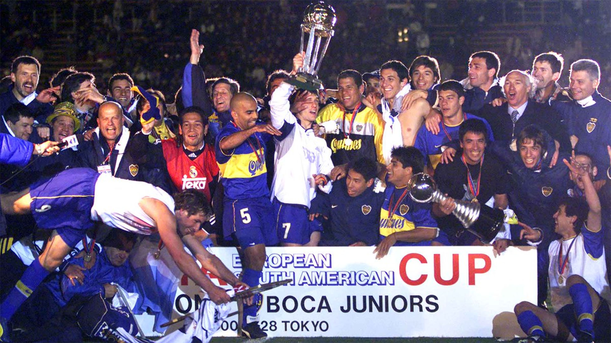

Los orígenes: el nacimiento de una pasión

El Club Atlético Boca Juniors nació el 3 de abril de 1905 en el barrio de La Boca, en Buenos Aires, Argentina. Fue fundado por cinco jóvenes: Esteban Baglietto, Alfredo Scarpatti, Santiago Sana y los hermanos Juan y Teodoro Farenga.
La reunión que dio origen al club comenzó en la casa de Baglietto y continuó en un banco de la Plaza Solís. El nombre elegido fue Boca Juniors, una combinación que unía la identidad del barrio con una palabra inglesa muy utilizada en aquella época.
Lo que comenzó como un proyecto de un grupo de jóvenes se convirtió, con el paso del tiempo, en una de las instituciones deportivas más reconocidas de Argentina y del fútbol mundial.
Azul y oro: una identidad para toda la vida

Durante sus primeros años, Boca Juniors utilizó diferentes diseños de camisetas, pues todavía no contaba con los colores que lo identificarían definitivamente.
La historia más conocida cuenta que, en 1907, Juan Bricchetto propuso elegir los colores de la bandera del primer barco que llegara al puerto. La embarcación resultó ser sueca, por lo que se adoptaron el azul y el amarillo.
Inicialmente, la camiseta tenía una franja amarilla en diagonal. En 1913 se incorporó la tradicional franja horizontal dorada sobre el fondo azul, un diseño que se convirtió en uno de los símbolos más reconocibles del club.
Desde entonces, estos colores representan la identidad xeneize y son protagonistas de las camisetas, las banderas y las tribunas de Boca Juniors.
La Bombonera: mucho más que un estadio

El estadio Alberto J. Armando, conocido mundialmente como La Bombonera, es uno de los símbolos más importantes de Boca Juniors. Está ubicado en el barrio de La Boca, en Buenos Aires, y fue inaugurado el 25 de mayo de 1940.
Su arquitectura es una de sus características más particulares. Debido a las limitaciones del terreno disponible, el estadio fue construido con tribunas de diferentes alturas y una estructura que acerca al público al campo de juego.
Con el paso de los años, La Bombonera se convirtió en un escenario histórico del fútbol argentino. Sus tribunas, sus colores y el ambiente creado por los aficionados hacen que cada partido sea una experiencia especial para los hinchas.
Para los seguidores de Boca, este estadio representa mucho más que un lugar para jugar al fútbol: es un símbolo de pertenencia, tradición y pasión.
Conoce el estadio aquí (YouTube)Momentos históricos
A lo largo de su trayectoria, Boca Juniors ha protagonizado acontecimientos que forman parte de la historia del fútbol argentino e internacional. Estos son algunos de los momentos más destacados:
- 1905 - El comienzo de la historia
- 1913 — Una nueva etapa
- 1940 — La inauguración de La Bombonera
- 1977 — La primera Copa Libertadores
- 2000 — Una conquista internacional inolvidable
- 2003 — Otra noche para la historia

Cinco jóvenes fundaron Boca Juniors en el barrio de La Boca, dando inicio a una institución que crecería hasta alcanzar reconocimiento internacional.

Boca debutó en la Primera División del fútbol argentino y comenzó a construir su historia en la máxima categoría.

El club estrenó su emblemático estadio el 25 de mayo, en un partido amistoso frente a San Lorenzo que terminó con una victoria por 2-0.

Boca Juniors conquistó por primera vez la Copa Libertadores, uno de los títulos más importantes de su historia deportiva.

Boca venció al Real Madrid por 2-1 en la Copa Intercontinental, en una final que quedó grabada en la memoria de sus aficionados.

El equipo volvió a conquistar la Copa Libertadores y posteriormente ganó la Copa Intercontinental frente al AC Milan, consolidando una de las etapas más recordadas de su trayectoria.